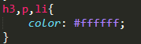
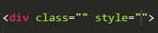
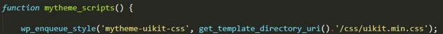

Для коректного редагування та форматування вмісту на HTML сторінці був створений CSS. Він також забезпечує коректне відображення стилів на усіх браузерах. Точніше кажучи CSS – це мова стилів яка відображає HTML сторінки. За допомогою CSS можна керувати шрифтами, кольорами, фонами, відступами, шириною та висотою.
Структуру CSS також називають «набором правил». До них входить такі елементи:
Також можуть бути селектори при наведені курсору на елемент. Тобто, якщо навести курсор на певний елемент змінюється якась його властивість чи стиль. Для цього щоб це реалізувати потрібно до селектора додати «:hover»
Одну таблицю властивостей можна задати кільком елементам, дописуючи їх через кому.

Найпростішим способом є прописування стилів в самому елементі за допомогою style.

Наступним є підключення у файлі HTML між тегами , цього рядка.
У WordPress файл style.css та усі інші завантажені стилі підключаються у файлі function.php вказуючи шлях до файлу.

Одним із рішень, адаптивно змінювати значення властивостей в правилах CSS, є використання функції calc(). Вона дозволяє робити прості матиматичні розрахунки в CSS.
Розглянемо приклад цієї функції. Нам потрібно змінити розмір шрифту для різних розмірів екрану, 400 пікселів – телефон і 1200 пікселів – ноутбук чи планшет.
18px – шрифт для екрану розміри якого є менші на 400px, 24px для екрану розміри якого є більші ніж 1200px. 100vw – це значення відповідає ширині екрану 100% (width : 100%). Якщо змінюється ширина екрану, розміри шрифту будуть мінятися. Використовуючи цю функцію шрифт буде мінятися динамічно відповідно до екрану і будуть ставати більшими або меншими.
Якщо потрібно використати фіксовані значення тоді можна використати медіа-запити.
Тоді на екрані до 600px, шрифт буде 18px і не буде змінюватися та на екрані 1200px і більше буде 24px.